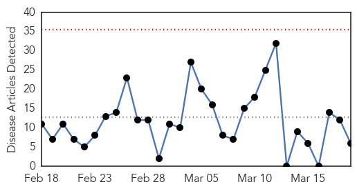
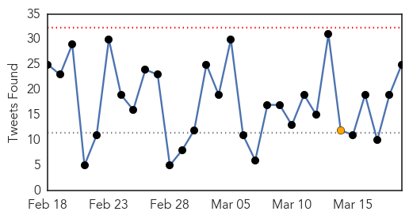
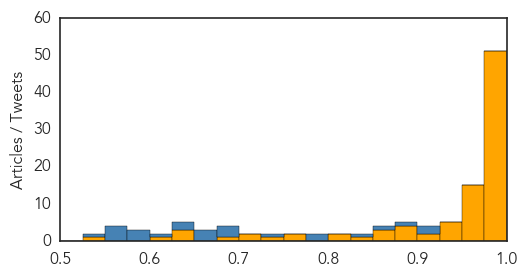

Influenza
30-Day Web Trend
0 alerts, 0 warnings

30-Day Twitter Trend
0 alerts, 0 warnings

Article Locations

Article Confidences

Top Articles:
- 0.875
- News Scan for Mar 19, 2015
- 0.862
- Role of wild birds in US H5N2 outbreaks questioned
- 0.804
- Bird flu cases on the increase in Plateau, poultry farmers cry out
- 0.635
- Risk of infections spreading in closed-door trains: Docs
- 0.592
- Universal Hib vaccination to prevent 72,000 kid deaths
- 0.589
- Polysaccharide Conjugate Vaccine against Pneumococcal Pneumonia in Adults — NEJM
Top Tweets:
-
No tweets found for Mar 19, 2015
Ebola
30-Day Web Trend
0 alerts, 0 warnings
30-Day Twitter Trend
0 alerts, 1 warnings

Article Locations
Article Confidences
Top Articles:
- 1.000
- There Are Now More Than a Dozen People Being Monitored for Ebola in the U.S.
- 1.000
- IN-DEPTH RADIO :: UPDATE: Patient tests negative for Ebola at Sunnybrook :: News
- 1.000
- US missionaries beat Ebola
- 1.000
- Sierra Leone imposes new curfew to contain Ebola
- 1.000
- The First Cases of Ebola Originally Thought to be Caused by Lassa Virus
- 1.000
- Sierra Leone orders Ebola lockdown; more aid workers evacuated
- 1.000
- Ebola – Sierra Leone to lock down 2.5 million people to fight the virus
- 1.000
- Ebola outbreak: Sierra Leone lockdown declared 'success'
- 1.000
- How Slow Responses Made the Ebola Outbreak So Deadly
- 0.999
- The Ebola Epidemic Isn’t Only Threatening Guineans’ Health · Global Voices
- 0.999
- Evacuated health worker tests negative for Ebola
- 0.999
- Ebola: Sierra Leone plans second lockdown to stem epidemic
- 0.999
- Two Additional Heath Workers Flown Back To US For Ebola Monitoring
- 0.999
- الاخبار المصورة
- 0.999
- Sierra Leone to lock down Ebola hotspots next week - officials
- 0.999
- Sunnybrook patient tests negative for Ebola
- 0.999
- Sunnybrook patient tests negative for Ebola
- 0.999
- Ebola crisis: Sierra Leone lockdown to hit 2.5m people
- 0.999
- Ebola-hit Sierra Leone to lock down 2.5 million people - Sierra Leone
- 0.999
- 2 more aid workers sent to U.S. for Ebola monitoring; up to 17 since Friday
- 0.998
- Violence against women rises in Ebola-hit nations
- 0.998
- IOM Ebola Response Training Expands across Sierra Leone from Academy in Freetown
- 0.998
- Risk of foodborne transmission of Ebola not demonstrated in practice
- 0.998
- An Ebola scare at Sunnybrook hospital turned out to just that as a patient has tested negative for the deadly virus
- 0.998
- Patient At Sunnybrook Tests Negative For Ebola
- 0.998
- Violence against women rises in Ebola-hit nations - ministers
- 0.998
- Ebola cases surge in Guinea, as Liberia and Sierra Leone show progress
- 0.998
- Liberians Worry Ebola Could Return From Guinea, Sierra Leone - Liberia
- 0.997
- The case for EOCs post-Ebola
- 0.997
- Sierra Leone to lockdown 2.5 mn to stem Ebola crisis
- 0.997
- Two Aid Workers Return to US for Ebola Monitoring
- 0.996
- Sierra Leone plans another shutdown to stop Ebola's spread
- 0.996
- Ebola diaries: Hitting the ground running
- 0.996
- What Do Vaccines Have to Do With 'Personal Freedom'?
- 0.996
- News Talk 610 CKTB :: Update: Toronto patient tests negative for Ebola :: News News
- 0.996
- Sierra Leone: In Ending Ebola, a Struggle to Track Victims' Elusive Contacts
- 0.994
- Deep in the jungle, hunting for the next Ebola outbreak
- 0.993
- Sunnybrook patient tests negative for Ebola
- 0.993
- In Sierra Leone, Ebola virus means 'school is not safe'
- 0.992
- Ebola-hit Sierra Leone to lock down 2.5 million people
- 0.992
- 2 aid workers flown back to US for Ebola monitoring
- 0.991
- Sierra Leone Plans Another Shutdown to Stop Ebola's Spread
- 0.989
- The Economist
- 0.989
- Fear and loathing in Monrovia over Ebola trials
- 0.989
- Sierra Leone: Ebola Virus Disease Emergency Plan of Action (EPoA) n° MDRSL005 Update, 18 March 2015 - Sierra Leone
- 0.989
- 2 more health workers arrive US for monitoring
- 0.985
- 3 ways mobile helped stop the spread of Ebola in Nigeria
- 0.984
- Ebola-hit Sierra Leone to lock down 2.5 million people
- 0.980
- Senators hotly debate language in fracking bill
- 0.980
- Maryland school districts seek calendar waivers
Showing top 50 articles...
Top Tweets:
- 0.914
- Ebola Cases Surge in Guinea as Liberia and Sierra Leone Show Progress - TIME http://t.co/c6YOuCdrnO ebola EVD
- 0.910
- @omojuwa: Looks like Liberia is about to knock Ebola out. Ebola currently on the ropes out there AUonEbola
- 0.889
- RT: Ebola Update: 24666 confirmed probable and suspected cases reported in 3 most affected countries with 10179 deaths. EbolaR…
- 0.860
- RT: Health care workers can amplify an ebola outbreak prior to diagnosis of pathogen. Heyman. iohc2015
- 0.840
- Ebola Air? Inside the plane that keeps Ebola patients alive while transporting ... - f http://t.co/0QGgHrt05j ebola EVD
- 0.788
- ebola update. 24701 cases 10194 deaths. GN: 95 new cases SL 55 new cases LB: 0 cases in 3 weeks http://t.co/KmsG490VBL
- 0.785
- RT: Liberia -->Ebola-free but "@EbolaAlert: Guinea Ebola cases rise 3 docs infected http://t.co/7j0N9oTKnz EbolaNews http:/…
- 0.742
- 3 ways mobile helped stop the spread of Ebola in Nigeria - Brookings Institution (blog) http://t.co/dpoXaxCKwB ebola EVD
- 0.697
- RT: Tejanie Golafaley: from fearful Ebola denier to fearless Ebola fighter. Watch and share! https://t.co/mQH7zdEyeR…
- 0.693
- Guinea surpasses SierraLeone in number of new Ebola cases last week for 1st time since outbreak began. EbolaResponse isn't over yet
- 0.692
- @UNICEF: The Ebola virus has infected more than 24k people since January 2014. 1 in 5 are children http://t.co/hmGXZSF1Ms"
- 0.668
- Biosecurity and Biodefense: Lessons from Ebola Virus Outbreak http://t.co/OF9zgb6zxJ
- 0.658
- Throwback: Liberia's last known Ebola patient Beatrice Yardolo leaving the Chinese Ebola treatment unit [Reuters] http://t.co/l03QBXkLu0
- 0.658
- Responding to Ebola Virus Disease on Commercial Airlines The CDC Experience http://t.co/ulee1XSLBp
- 0.650
- RT: The Ebola virus has infected more than 24k people since January 2014. 1 in 5 are children http://t.co/YQXGyjd13n
- 0.637
- The case for EOCs post-Ebola - Devex http://t.co/ze6sENSXb8 ebola EVD
- 0.617
- RT: The number of Ebola cases in West Africa is declining - but there’s still lots more work to be to gettozero http://t.co/YQXGy…
- 0.589
- Two more US healthcare workers repatriated for Ebola monitoring - Reuters http://t.co/JVhihMfHXH ebola EVD
- 0.580
- Patient suspected of having Ebola treated at Sunnybrook - Toronto Star http://t.co/V6b77CmJTD ebola EVD
- 0.576
- Deep in the rain forest hunting for the next Ebola outbreak - Washington Post http://t.co/vdARmGh55V ebola EVD
- 0.573
- Map. Ebola outbreak in West Africa - CadreHarmonisé analysis March/May 2015 foodsecurity http://t.co/Fztaah1jCp
- 0.561
- A Survey of UK HealthcareWorkers’ Attitudes on Volunteering to Help with the Ebola Outbreak in West Africa http://t.co/6knvVyVRNH
- 0.552
- Liberia's last Ebola patient left hospital last week a year after the West African country reported its first case. http://t.co/LVKaE7dQJF
- 0.551
- “The failure to prepare could allow the next epidemic to be dramatically more devastating than Ebola.”@BillGates Africaagainstebola
- 0.526
- RT: Care has been markedly different for a Sierra Leonean colleague who developed Ebola within days of a U.S. aid worker http://t.…